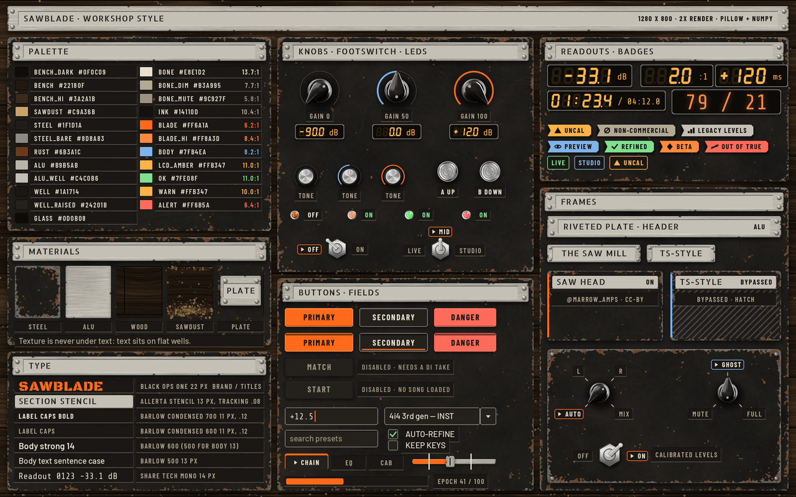
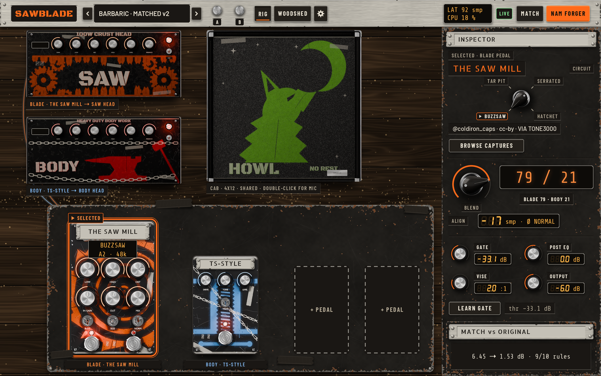
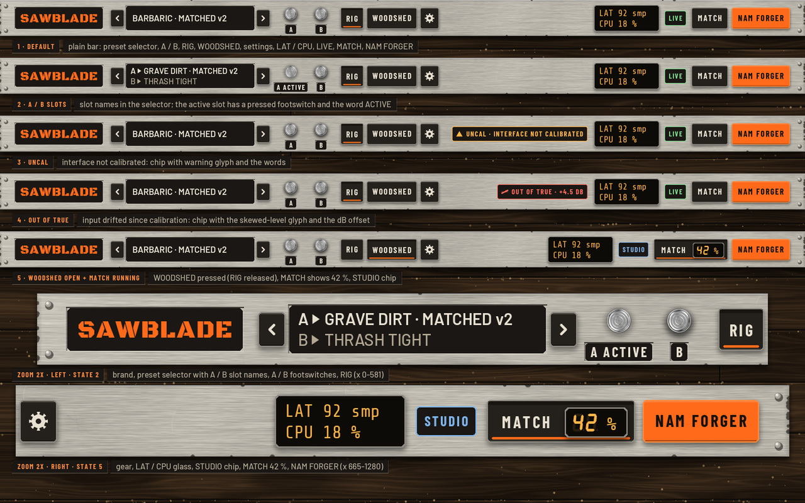
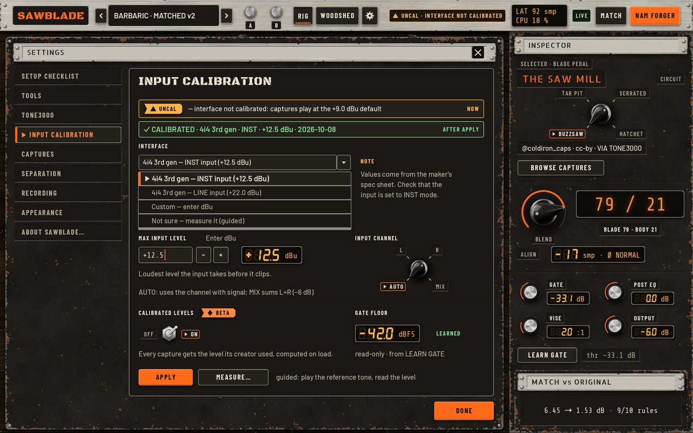
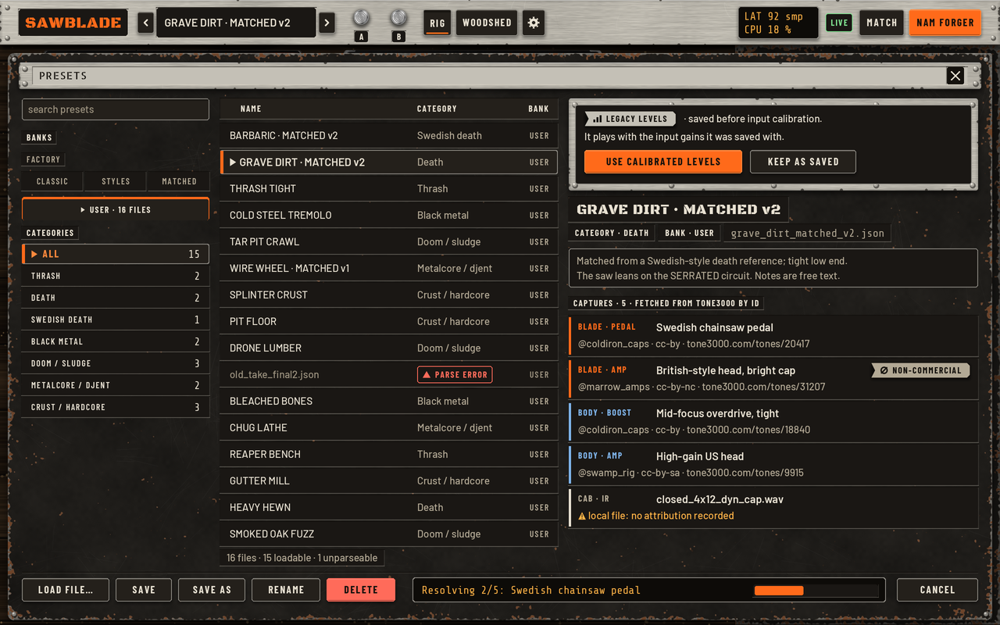
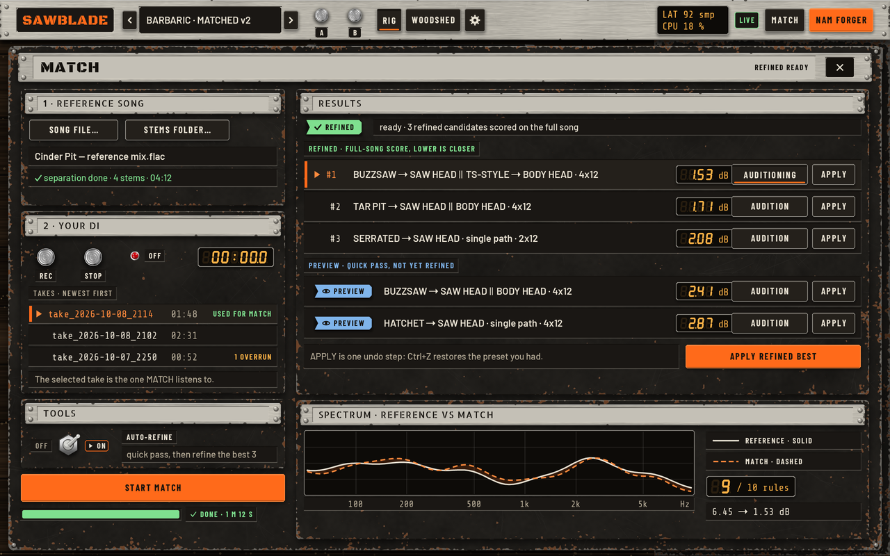
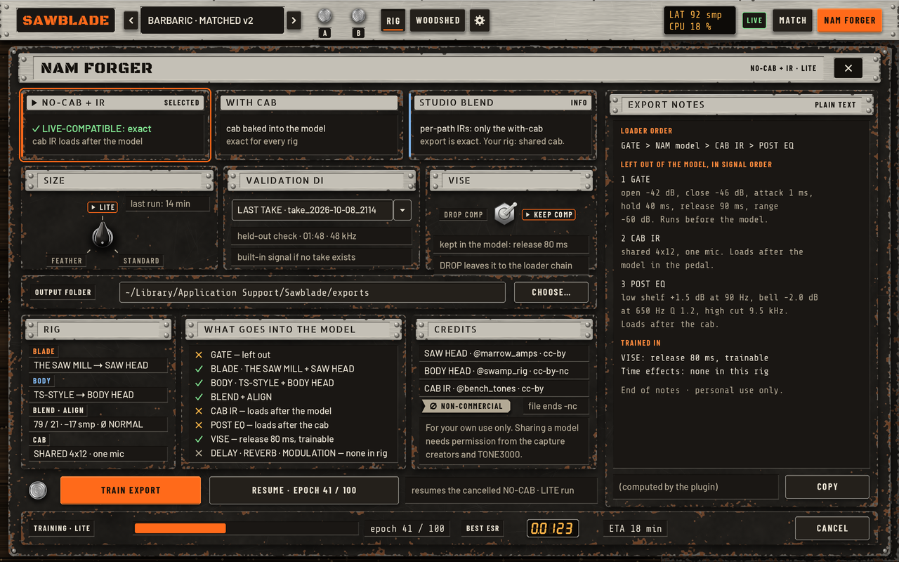
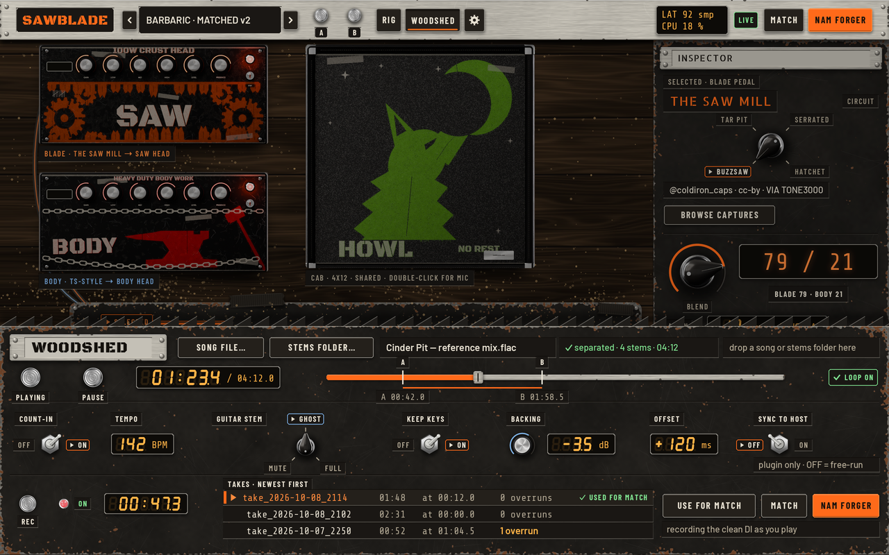
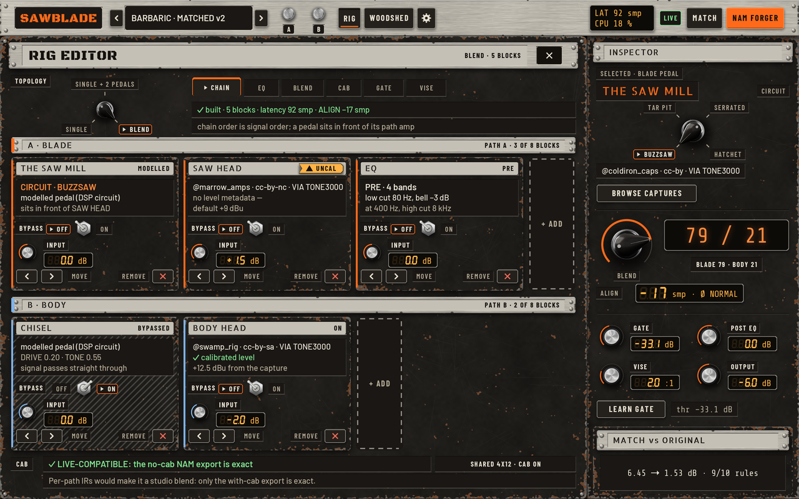
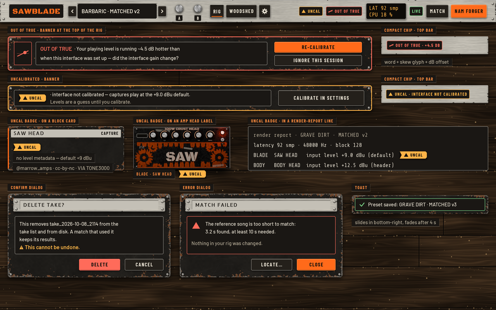

Ten mockups of the whole plugin in the worn metal and sawdust look, for you to pick from and mark up. Every screen is 1280 × 800, rendered from scripts in the repo, so any change is a re-render. All text passes WCAG AA (lowest 5.3:1, body text 13.7:1). No texture sits behind text, and every state has a word or shape as well as a colour. Tap a screen to open it full size. Comment on anything.
Palette with measured contrast, materials (worn steel, brushed aluminium, bench wood, sawdust, riveted plate), type, knobs, footswitches, LEDs, toggles, selectors, buttons, LCD and nixie readouts, badges, frames.

BLADE and BODY amp heads, the cab and the pedalboard with THE SAW MILL (selected) and TS-STYLE. The inspector has the circuit selector (BUZZSAW / TAR PIT / SERRATED / HATCHET), the BLEND readout and GATE, POST EQ, VISE and OUTPUT with value readouts.

Five states: default, A/B with slot names, uncalibrated chip, OUT OF TRUE chip, and WOODSHED open with MATCH running. Two 2× zooms below.

Before and after status, the 4i4 3rd gen device presets, the dBu entry with readout, input channel AUTO / L / R / MIX, the CALIBRATED LEVELS beta toggle and the learned gate floor.

Banks, categories and the preset list. The info panel shows each capture's creator and licence. A legacy preset is selected, showing the LEGACY LEVELS hint with USE CALIBRATED LEVELS.

Reference song, your DI takes, auto-refine, refined and preview results with audition and apply, and the spectrum (reference solid, match dashed).

Export modes, size, validation DI, the VISE choice, what goes into the model, credits with the non-commercial badge, train and resume, export notes, and the training strip.

The play-along panel docked over the rig: transport, position, loop A/B, count-in, guitar stem MUTE / GHOST / FULL, backing level, offset, sync to host and the record band.

Topology selector, tabs, and the BLADE and BODY lanes of block cards. The SAW HEAD capture card carries an UNCAL badge and TS-STYLE is shown bypassed.

OUT OF TRUE and uncalibrated banners and chips, the UNCAL badge in three places, confirm and error dialogs, and a toast.
